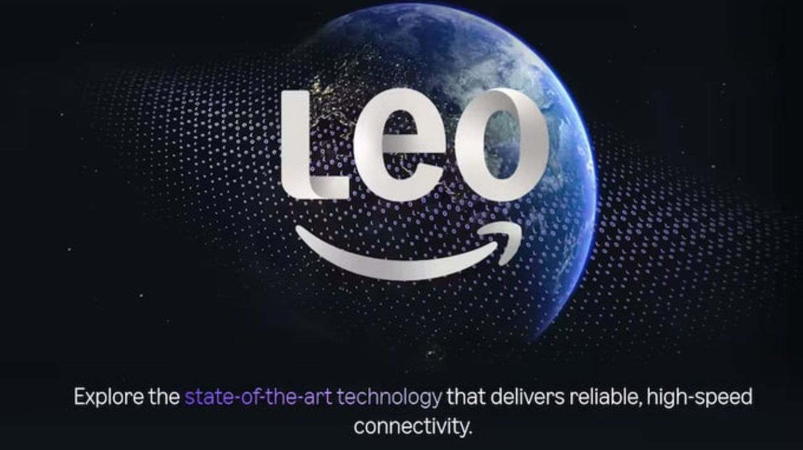

Amazon lanzará su servicio de internet satelital en Sudamérica desde 2026
Amazon ofrecerá internet satelital en Sudamérica desde 2026. SKY lo venderá en Brasil y DIRECTV en Argentina y otros países.

Amazon ha confirmado oficialmente que su ambicioso proyecto de internet satelital de órbita baja, conocido como Proyecto Kuiper, comenzará a operar en Sudamérica a partir de 2026. Esta iniciativa busca competir directamente en el mercado de conectividad global, desplegando una infraestructura tecnológica avanzada que promete cambiar la forma en que millones de personas acceden a la red en el continente.
Para facilitar la llegada de esta tecnología a los hogares y empresas, la comercialización del servicio no será directa, sino a través de aliados estratégicos ya instalados en la región. En Brasil, la operación estará a cargo de la empresa SKY, mientras que en Argentina y otros países vecinos, el servicio será distribuido por DIRECTV, aprovechando su amplia red de logística y atención al cliente para llegar a cada rincón del territorio.
La gran ventaja de esta red de satélites de órbita baja es que ofrece una menor latencia (es decir, una respuesta más rápida en la navegación) y un rendimiento muy superior al de los satélites tradicionales. Esto es especialmente importante para las zonas rurales y remotas, donde actualmente es muy difícil o costoso instalar cables de fibra óptica, permitiendo que lugares aislados tengan una conexión a internet de alta velocidad y calidad.
Con este importante anuncio, Sudamérica se posiciona como una de las primeras regiones del mundo en recibir la expansión internacional del Proyecto Kuiper.
Esto coloca al continente en el mapa de la vanguardia tecnológica, abriendo nuevas oportunidades para la educación digital, el teletrabajo y el desarrollo económico en áreas que históricamente han quedado desconectadas del mundo digital.